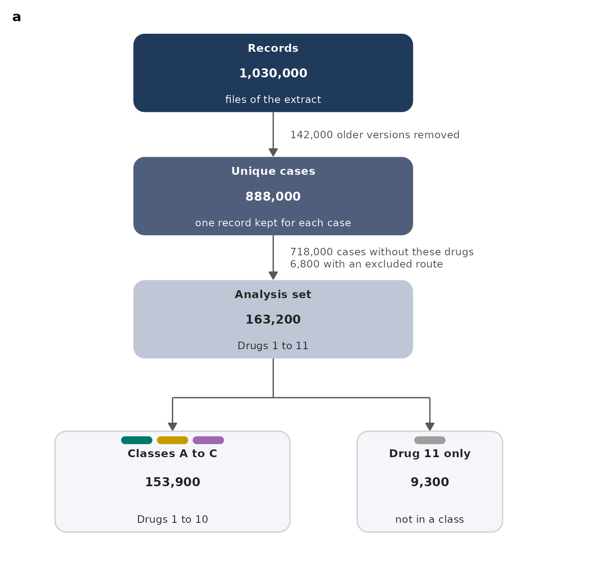
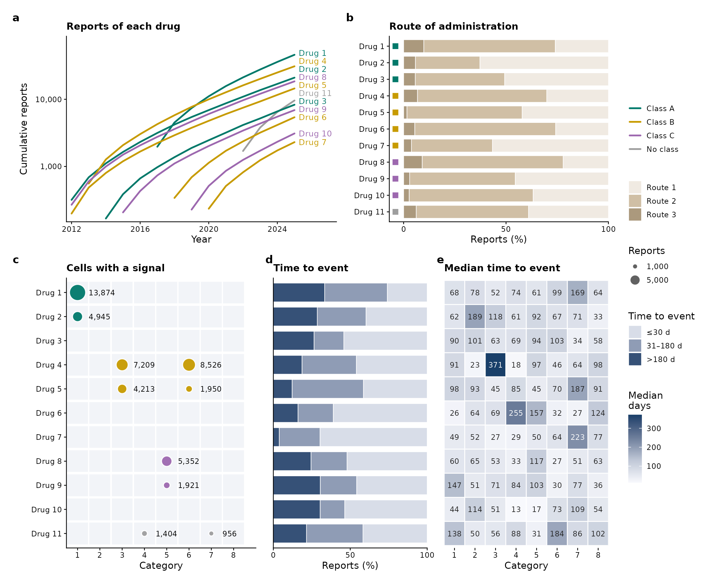
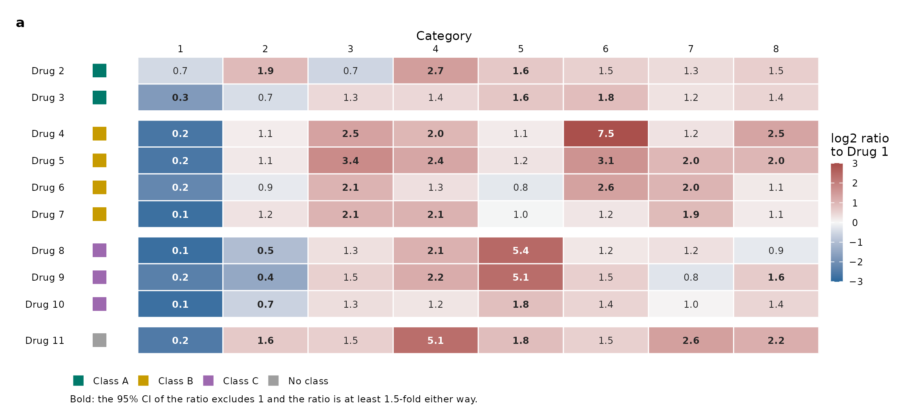
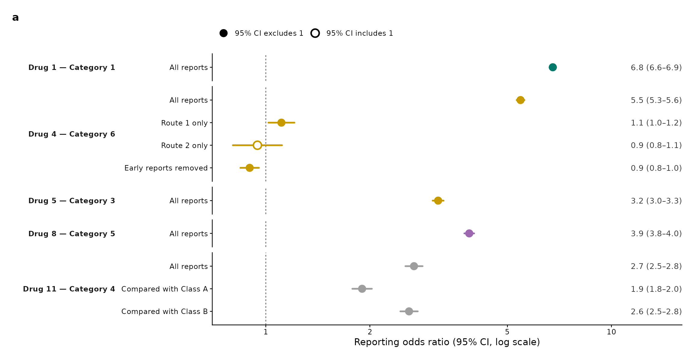

library(ggplot2)
library(themeset)
# patchwork lays out the panels of every figure; without it the code is shown but not run
has_patchwork <- requireNamespace("patchwork", quietly = TRUE)Overview
A study of spontaneous reports asks whether a drug is reported with an event more often than the other drugs are. Its figures follow the same path every time: the flow of the cases into the analysis, the reports of each drug, the profile of the events of each drug, the contrast between drugs, and a few estimates that are checked in other ways.
This article draws five such figures from simulated data. Nothing in
them is a result: the drugs are Drug 1 to Drug 11, the events fall in
Category 1 to Category 8, and the counts are made up. The reporting odds
ratios (ROR) are computed from the counts, as they would be from real
ones. As in A Figure Set for a Reanalysis,
the figures share a color contract and the style of a
journal, journal_theme("nature"), and
journal_audit() checks the set at the end. The figures here
are of other kinds: a flow chart, a bubble matrix, a heat map with a
tree, and forest plots.
1. The Study and the Color Contract
For one drug and one category of events, the reports make a 2 x 2 table: a reports of the drug with the event and b without, c reports of all the other drugs with the event and d without. The ROR is (a / b) / (c / d), and its 95% confidence interval is exp(log ROR +/- 1.96 s), with s the square root of 1/a + 1/b + 1/c + 1/d. A ROR above 1 means that the event is reported more often with the drug than with the others, which is a signal, and not a risk.
Every figure takes its colors from the contract:
- Class: Drugs 1 to 3 are Class A, a deep teal; Drugs 4 to 7 are Class B, a gold; Drugs 8 to 10 are Class C, an orchid; Drug 11 is in no class, a grey. The four colors stay at least 16 apart (CIEDE2000) with normal vision and with each kind of color-vision deficiency. Every figure uses them.
- Direction: a ROR below 1 is a steel blue and a ROR above 1 a brick red, on a ramp that passes through white at 1. No class is blue or red. Figures 3 and 4 use it.
- Evidence: a filled circle when the 95% CI excludes 1, an open circle when it includes 1; in a heat map, bold numbers mean the same.
- Categories of events have no color. There are eight of them, more than readers with color-vision deficiency can keep apart (see Section 7), so they are the labels of the columns and are named in the text of the figures. Everything else is neutral: the three routes of Figure 2 are an oat, a sand and a khaki, and the ordered quantities (the bins of time, the median days, the boxes of the flow chart) are steps of one cool slate.
A group keeps its color across the figures, and no figure gives one color two meanings.
library(patchwork)
# the colors are made with hcl() of base R, from a hue, a chroma and a lightness
class_levels <- c("Class A", "Class B", "Class C", "No class")
class_fill <- c(`Class A` = hcl(176, 46, 44), `Class B` = hcl(62, 82, 66), `Class C` = hcl(296, 54, 52), `No class` = grey(0.62))
# a ramp from white to a deep end: the chroma grows and the lightness falls together
from_white <- function(hue, chroma, lightness, n = 6) {
s <- seq(0, 1, length.out = n)^0.9
hcl(hue, chroma * s, 97 - (97 - lightness) * s)
}
direction <- c(rev(from_white(245, 54, 42)), from_white(14, 68, 44)[-1]) # blue below 1, white at 1, red above 1
slate <- function(chroma, lightness) hcl(250, chroma, lightness) # the cool neutral of ordered quantities
ink <- grey(0.14) # text and frames inside the plots
# one theme for every panel, and the sizes that the panels share
figure_theme <- journal_theme("nature") +
theme(plot.background = element_rect(fill = "white", colour = NA)) # no outline: it is a stroked path that crosses text where panels meet
small_text <- 6 / .pt # direct labels and notes are 6 pt (geom_text sizes are in mm)
tile_text <- 5.5 / .pt # numbers inside tiles and beside marks are 5.5 pt
strip_text <- theme(strip.background = element_blank(), strip.text = element_text(face = "bold"))
tag_theme <- theme(plot.tag = element_text(size = 8, face = "bold"))
# the panels of a figure sit on a grid of columns: each row lists its panels and their widths
design_rows <- function(rows) {
paste(vapply(rows, function(row) {
paste0(vapply(names(row), function(id) strrep(id, row[[id]]), ""), collapse = "")
}, ""), collapse = "\n")
}
tag_panels <- function(figure, n) {
figure + plot_annotation(tag_levels = list(journal_tags("nature", n)), theme = tag_theme)
}
category_number <- function(x) sub("Category ", "", x) # "Category 3" is written 3 under the axis title Category
minus <- function(x) sub("-", "\u2212", x, fixed = TRUE) # a real minus signThe theme draws the background of a plot without an outline. The themes of ggplot2 draw a white one, which in a PDF is a stroked path that nobody can see, and a check of the rendered file finds it wherever a label sits across the edge of two panels.
The study itself is made of the counts of reports. Eleven drugs have
between 2,300 and 46,000 reports, and 900,000 reports of other drugs are
the comparator. Each class has a few real effects, set in
lfc, the log of the ratio of the odds to the comparator,
and the rest is noise. Every figure reads from the table
cells, which has one row for each drug and category.
set.seed(101)
drugs <- sprintf("Drug %d", 1:11)
drug_group <- factor(c(rep(class_levels[1:3], times = c(3, 4, 3)), "No class"), class_levels)
names(drug_group) <- drugs
events <- sprintf("Category %d", 1:8)
n_reports <- c(46000, 21000, 8300, 31000, 14500, 5400, 2300, 18500, 6900, 3100, 9600) # reports of each drug
n_other <- 900000 # reports of all the other drugs
p_other <- c(0.060, 0.080, 0.115, 0.060, 0.095, 0.065, 0.050, 0.045) # the share of those with each category
# the log of the ratio of a drug to the comparator, for each category: noise and a few effects by class
lfc <- matrix(rnorm(11 * 8, 0, 0.28), 11, 8, dimnames = list(drugs, events))
lfc[1:3, 1] <- lfc[1:3, 1] + c(1.7, 1.2, 0.8)
lfc[4:7, c(3, 6)] <- lfc[4:7, c(3, 6)] + rep(c(1.1, 0.8, 0.6, 0.4), 2)
lfc[8:10, 5] <- lfc[8:10, 5] + c(1.2, 0.9, 0.6)
lfc[8:10, 2] <- lfc[8:10, 2] - 0.6
lfc[11, c(4, 7)] <- lfc[11, c(4, 7)] + c(1.0, 0.6)
cells <- expand.grid(drug = drugs, event = events, stringsAsFactors = FALSE)
cells$n_drug <- n_reports[match(cells$drug, drugs)]
p_cell <- pmin(p_other[match(cells$event, events)] * exp(lfc[cbind(cells$drug, cells$event)]), 0.9)
cells$a <- pmax(rbinom(nrow(cells), cells$n_drug, p_cell), 1) # reports of the drug with the event
cells$b <- cells$n_drug - cells$a # and without
cells$c <- round(n_other * p_other[match(cells$event, events)]) # reports of the others with the event
cells$d <- n_other - cells$c # and without
# the reporting odds ratio and its 95% CI, from the four counts
from_counts <- function(a, b, c, d) {
ror <- (a / b) / (c / d)
se <- sqrt(1 / a + 1 / b + 1 / c + 1 / d)
data.frame(ror = ror, se = se, lo = exp(log(ror) - 1.96 * se), hi = exp(log(ror) + 1.96 * se))
}
cells <- cbind(cells, from_counts(cells$a, cells$b, cells$c, cells$d))
cells$signal <- cells$a >= 3 & cells$lo > 1 & cells$ror >= 2 # the rule of a signal: at least 3 reports, CI above 1, ROR of 2 or more
cells$group <- drug_group[cells$drug]
cells$drug <- factor(cells$drug, drugs)
cells$event <- factor(cells$event, events)
head(cells[cells$signal, c("drug", "event", "a", "ror", "lo", "hi")], 4)
#> drug event a ror lo hi
#> 1 Drug 1 Category 1 13874 6.765839 6.620409 6.914463
#> 2 Drug 2 Category 1 4945 4.825392 4.668553 4.987500
#> 26 Drug 4 Category 3 7209 2.331888 2.269464 2.396030
#> 27 Drug 5 Category 3 4213 3.151724 3.038969 3.2686622. Figure 1: The Flow of the Cases
A flow chart is a plot with no axes: boxes are polygons, their text
is geom_text(), and the arrows are
geom_segment() with an arrow(). Everything
sits on a plane of 100 by 100, so that the position of a box is a number
that can be read and changed. The counts are computed from the study, so
that the chart agrees with the figures after it.
n_set <- sum(n_reports) - 3400 # a report with several of the drugs is counted once
n_union <- sum(n_reports[1:10]) - 3100 # the cases of the three classes
n_only <- n_set - n_union # the cases of Drug 11 that are in no class
n_unique <- 888000; n_older <- 142000; n_records <- n_unique + n_older
n_local <- 6800; n_nodrug <- n_unique - n_set - n_local
big <- function(x) format(x, big.mark = ",", trim = TRUE)
# boxes on a plane of 100 by 100: where each sits, its three lines of text and its colors
boxes <- data.frame(
xmin = c(20, 20, 20, 6, 60), xmax = c(70, 70, 70, 48, 86),
ymin = c(84, 62, 40, 9, 9), ymax = c(98, 76, 54, 27, 27),
head = c("Records", "Unique cases", "Analysis set", "Classes A to C", "Drug 11 only"),
n = c(n_records, n_unique, n_set, n_union, n_only),
note = c("files of the extract", "one record kept for each case", "Drugs 1 to 11", "Drugs 1 to 10", "not in a class"),
stringsAsFactors = FALSE
)
boxes$fill <- c(slate(30, 24), slate(26, 40), slate(14, 80), slate(3, 97), slate(3, 97))
boxes$edge <- c(NA, NA, NA, grey(0.82), grey(0.82))
boxes$ink <- c("white", "white", ink, ink, ink)
boxes$x <- (boxes$xmin + boxes$xmax) / 2
boxes$y <- (boxes$ymin + boxes$ymax) / 2
# ggplot2 has no rounded rectangle, so a box is a polygon: a quarter of a circle at each corner
polygon_of <- function(xmin, xmax, ymin, ymax, radius, id, fill, edge) {
turn <- seq(0, pi / 2, length.out = 9)
corner <- function(cx, cy, from) cbind(cx + radius * cos(from + turn), cy + radius * sin(from + turn))
p <- rbind(corner(xmax - radius, ymax - radius, 0), corner(xmin + radius, ymax - radius, pi / 2),
corner(xmin + radius, ymin + radius, pi), corner(xmax - radius, ymin + radius, 3 * pi / 2))
data.frame(x = p[, 1], y = p[, 2], id = id, fill = fill, edge = edge)
}
shapes <- do.call(rbind, lapply(seq_len(nrow(boxes)), function(i)
with(boxes[i, ], polygon_of(xmin, xmax, ymin, ymax, 2, paste0("box", i), fill, edge))))
# a small pill in the color of each class at the top of the two boxes of the classes
pills <- data.frame(box = c(4, 4, 4, 5), place = c(1, 2, 3, 1), count = c(3, 3, 3, 1), fill = unname(class_fill))
pills$xmin <- boxes$x[pills$box] - (pills$count * 5.6 + (pills$count - 1) * 0.8) / 2 + (pills$place - 1) * 6.4
pills$ymax <- boxes$ymax[pills$box] - 0.9
shapes <- rbind(shapes, do.call(rbind, lapply(seq_len(nrow(pills)), function(i)
with(pills[i, ], polygon_of(xmin, xmin + 5.6, ymax - 1.4, ymax, 0.7, paste0("pill", i), fill, NA)))))
# the arrows: down the stack, and from the analysis set into its two groups
trunk <- boxes$x[1]
down <- data.frame(x = c(trunk, trunk, boxes$x[4], boxes$x[5]), y = c(boxes$ymin[1], boxes$ymin[2], 33, 33),
yend = c(boxes$ymax[2], boxes$ymax[3], boxes$ymax[4], boxes$ymax[5]) + 0.2)
joint <- data.frame(x = c(trunk, boxes$x[4]), xend = c(trunk, boxes$x[5]), y = c(boxes$ymin[3], 33), yend = c(33, 33))
notes <- data.frame(
x = trunk + 3, y = c(mean(c(boxes$ymin[1], boxes$ymax[2])), mean(c(boxes$ymin[2], boxes$ymax[3]))),
label = c(sprintf("%s older versions removed", big(n_older)),
sprintf("%s cases without these drugs\n%s with an excluded route", big(n_nodrug), big(n_local)))
)
thin <- 0.35 # one line width for the outlines and the arrows
arrowhead <- arrow(length = unit(1.6, "mm"), type = "closed")
flow <- ggplot() +
geom_segment(data = joint, aes(x = x, xend = xend, y = y, yend = yend), linewidth = thin, colour = grey(0.35)) +
geom_segment(data = down, aes(x = x, xend = x, y = y, yend = yend), arrow = arrowhead, linewidth = thin, colour = grey(0.35)) +
geom_polygon(data = shapes, aes(x = x, y = y, group = id, fill = fill, colour = edge), linewidth = thin) +
geom_text(data = boxes, aes(x = x, y = ymax - 2.5 - 1.4 * (ymax < 30), label = head, colour = ink), size = 6.5 / .pt, fontface = "bold") +
geom_text(data = boxes, aes(x = x, y = y, label = big(n), colour = ink), size = 7 / .pt, fontface = "bold") +
geom_text(data = boxes, aes(x = x, y = ymin + 2.3, label = note, colour = ink), size = 6 / .pt) +
geom_text(data = notes, aes(x = x, y = y, label = label), hjust = 0, size = small_text, colour = grey(0.3), lineheight = 0.95) +
scale_fill_identity() + scale_colour_identity() +
coord_fixed(xlim = c(0, 100), ylim = c(5, 100), expand = FALSE) +
theme_void(base_size = 7) + tag_theme
tag_panels(flow, 1)
Figure 1. Flow of the cases into the analysis. The records of the extract, the unique cases, the analysis set of Drugs 1 to 11, and its two groups, with what is removed at each step written beside its arrow. The pills give the colors of the classes. All counts are simulated.
- The first three boxes are three steps of one cool slate, darkest first, and the last two are pale. The only colors of the chart are the small pills at the top of the last two: the colors of the three classes for the box that holds them, the grey of “no class” for Drug 11.
- The style is flat: no shadow, rounded boxes, and one line width
(
thin) for the outlines and the arrows. ggplot2 has no rounded rectangle, sopolygon_of()draws one as a polygon with a quarter of a circle at each corner, andcoord_fixed()keeps a unit of x and a unit of y equal on the page, so that the corners stay round. - What is removed at each step is written beside its arrow, in a size that fits in the margin, and the number inside each box is the one that remains.
- Because the plot is made of data frames (
boxes,down,joint), adding a step is adding a row, not moving shapes by hand.
3. Figure 2: Reports, Routes and Time
The reports of each drug over the years, as one line per drug, labeled at its end and colored by class. Next to it, the routes of administration as 100% bars. The cells with a signal are drawn as bubbles in a matrix of drugs and categories, sized by their reports, and the time between the start of the drug and the event follows, as bars and as a heat map of medians. The panels in the last row share their rows, so that a drug is read across the three.
set.seed(21)
route_colors <- setNames(hcl(60, c(8, 24, 26), c(93, 78, 64)), c("Route 1", "Route 2", "Route 3")) # oat, sand, khaki
bins <- c("\u226430 d", "31\u2013180 d", ">180 d")
axis_drugs <- scale_y_discrete(limits = rev(drugs))
# a: the cumulative reports of each drug, from the year of its first report
years <- 2012:2025
launch <- c(2017, 2012, 2014, 2013, 2012, 2018, 2020, 2012, 2015, 2019, 2022)
cumulative <- do.call(rbind, lapply(seq_along(drugs), function(d) {
yr <- years[years >= launch[d]]
w <- exp(0.2 * (yr - launch[d]))
data.frame(drug = drugs[d], year = yr, total = cumsum(as.vector(rmultinom(1, n_reports[d], w / sum(w)))))
}))
cumulative$group <- drug_group[cumulative$drug]
ends <- cumulative[cumulative$year == max(years), ]
ends <- ends[order(ends$total), ]
ends$y <- log10(ends$total)
for (i in seq_len(nrow(ends))[-1]) ends$y[i] <- max(ends$y[i], ends$y[i - 1] + 0.12) # labels at least 0.12 apart on the log scale
# b: the routes of each drug
p1 <- runif(11, 0.2, 0.88); p3 <- runif(11, 0.01, 0.1)
route_mix <- data.frame(drug = rep(drugs, 3), route = factor(rep(names(route_colors), each = 11), names(route_colors)),
share = c(p1, 1 - p1 - p3, p3))
route_mix$group <- drug_group[route_mix$drug]
# c: the cells with a signal
signal <- cells[cells$signal, ]
signal$drug <- as.character(signal$drug)
# d, e: the time to the event, in three bins and as a median
onset_share <- t(sapply(1:11, function(d) { g <- rgamma(3, c(5, 3, 2) * runif(3, 0.5, 1.6)); g / sum(g) }))
onset <- data.frame(drug = rep(drugs, 3), bin = factor(rep(bins, each = 11), bins), share = as.vector(onset_share))
median_onset <- data.frame(drug = cells$drug, event = cells$event, days = round(exp(rnorm(nrow(cells), log(60), 0.7))))
panels_2 <- list(
A = ggplot(cumulative, aes(year, total, group = drug, colour = group)) +
geom_line(linewidth = 0.6, lineend = "round") +
geom_text(data = ends, aes(x = max(years) + 0.25, y = 10^y, label = drug), hjust = 0, size = small_text, show.legend = FALSE) +
scale_colour_manual(values = class_fill, name = NULL, drop = FALSE) +
scale_x_continuous(breaks = seq(2012, 2024, 4), expand = expansion(add = c(0.3, 2.2))) +
scale_y_log10(breaks = c(1e2, 1e3, 1e4), labels = c("100", "1,000", "10,000"), expand = expansion(mult = c(0.02, 0.1))) +
labs(x = "Year", y = "Cumulative reports", title = "Reports of each drug") +
figure_theme,
B = ggplot(route_mix, aes(share, drug, fill = route)) +
geom_col(width = 0.78, colour = "white", linewidth = 0.2) +
geom_point(data = data.frame(drug = drugs, group = drug_group), aes(x = -0.04, y = drug, colour = group),
shape = 15, size = 1.8, inherit.aes = FALSE, show.legend = FALSE) +
scale_fill_manual(values = route_colors, name = NULL) +
scale_colour_manual(values = class_fill, guide = "none") +
axis_drugs + scale_x_continuous(limits = c(-0.07, 1), breaks = c(0, 0.5, 1), labels = c("0", "50", "100"), expand = expansion(0)) +
labs(x = "Reports (%)", y = NULL, title = "Route of administration") +
figure_theme,
C = ggplot(signal, aes(event, drug)) +
geom_tile(data = cells, aes(event, as.character(drug)), fill = slate(4, 96), colour = NA, width = 0.94, height = 0.9, inherit.aes = FALSE) +
geom_point(aes(size = a, fill = group), shape = 21, colour = "white", stroke = 0.5, alpha = 0.95, show.legend = c(size = TRUE, fill = FALSE)) +
geom_text(aes(label = format(a, big.mark = ",", trim = TRUE)), nudge_x = 0.5, hjust = 0, size = tile_text) +
axis_drugs + scale_x_discrete(limits = events, labels = category_number, expand = expansion(add = c(0.5, 1))) +
scale_size_area(max_size = 5.2, breaks = c(100, 1000, 5000), labels = c("100", "1,000", "5,000"), name = "Reports",
guide = guide_legend(override.aes = list(fill = "grey35"))) +
scale_fill_manual(values = class_fill, guide = "none") +
labs(x = "Category", y = NULL, title = "Cells with a signal") +
figure_theme,
D = ggplot(onset, aes(share, drug, fill = bin)) +
geom_col(width = 0.78, colour = "white", linewidth = 0.2) +
axis_drugs + scale_x_continuous(breaks = c(0, 0.5, 1), labels = c("0", "50", "100"), expand = expansion(0)) +
scale_fill_manual(values = setNames(slate(c(10, 24, 36), c(88, 64, 34)), bins), name = "Time to event") +
labs(x = "Reports (%)", y = NULL, title = "Time to event") +
figure_theme + theme(axis.text.y = element_blank(), axis.ticks.y = element_blank()),
E = ggplot(median_onset, aes(event, drug, fill = days)) +
geom_tile(colour = "white", linewidth = 0.3) +
geom_text(aes(label = days, colour = days > 200), size = tile_text, show.legend = FALSE) +
axis_drugs + scale_x_discrete(labels = category_number, expand = expansion(0)) +
scale_colour_manual(values = c(`TRUE` = "white", `FALSE` = ink)) +
scale_fill_gradientn(colours = slate(c(3, 14, 28, 38), c(98, 80, 52, 26)), name = "Median\ndays") +
labs(x = "Category", y = NULL, title = "Median time to event") +
figure_theme + theme(axis.text.y = element_blank(), axis.ticks.y = element_blank(), axis.line = element_blank())
)
tag_panels(wrap_plots(panels_2, design = design_rows(list(c(A = 20, B = 16), c(C = 15, D = 8, E = 13))), heights = c(55, 80)) +
plot_layout(guides = "collect"), 5)
Figure 2. Reports, routes and time to the event for 11 drugs. a, Cumulative reports of each drug by year (logarithmic axis). b, Route of administration of the reports of each drug (100% bars). c, Cells with a signal (at least 3 reports, lower limit of the 95% CI above 1, ROR of 2 or more); the area of a dot and the number beside it are the reports. d, Share of the reports by time to the event. e, Median time to the event in days. ROR, reporting odds ratio. All data are simulated.
- Panels c, d and e have the same rows, and only c names them. The pale tiles in c mark the cells that are not signals, so that the matrix keeps the shape of the heat map beside it. The numbers of c have no grid line behind them: a line behind a number crosses it.
- The eight categories are written 1 to 8 under one axis title. Names such as “Category 3”, tilted, touch each other in columns this narrow; upright numbers never do.
- Each legend is made once:
plot_layout(guides = "collect")gathers them on the right, and a legend that two panels would repeat is switched off in one of them (show.legend), here the class colors of c, which a already shows. - The labels at the end of the lines of a are spaced on the logarithmic scale by a loop, at least 0.12 apart, so that no ggrepel package is needed.
- The squares of the class colors in b are points
drawn at a position just left of the bars, with
show.legend = FALSEand a scale without a guide.
4. Figure 3: The Profile of the Events
Three views of the same table. The reports of each drug, as bars, so that the size of the denominator is in view. The ROR of every drug and category as a heat map, with the categories in the order of a hierarchical clustering and the tree above them; the largest ROR of each drug has a black frame. And, below, the largest ROR of each drug with its 95% CI on a logarithmic axis, with the name of its category. The drugs are in the same order, in the same classes, throughout.
cells$class_label <- factor(as.character(cells$group), class_levels, c("Class A", "Class B", "Class C", "No\nclass"))
by_class <- facet_grid(rows = vars(class_label), scales = "free_y", space = "free_y", switch = "y")
no_strip <- theme(strip.text.y = element_blank(), strip.text.y.left = element_blank())
# a: the reports of each drug, in thousands
volume <- data.frame(drug = factor(drugs, drugs), thousand = n_reports / 1000)
volume$group <- drug_group[as.character(volume$drug)]
volume$class_label <- factor(as.character(volume$group), class_levels, c("Class A", "Class B", "Class C", "No\nclass"))
# b: the categories in the order of a hierarchical clustering of their log ratios, and the tree
log_ror <- tapply(log2(cells$ror), list(cells$drug, cells$event), identity)
hc <- hclust(dist(t(log_ror)), method = "average")
tree_segments <- function(hc) {
n <- length(hc$order)
x <- numeric(n); x[hc$order] <- seq_len(n) # where each leaf sits
node_x <- numeric(n - 1)
at <- function(i, what) if (i < 0) c(x[-i], 0)[what] else c(node_x[i], hc$height[i])[what]
do.call(rbind, lapply(seq_len(n - 1), function(k) {
a <- hc$merge[k, 1]; b <- hc$merge[k, 2]
node_x[k] <<- (at(a, 1) + at(b, 1)) / 2
h <- hc$height[k]
data.frame(x = c(at(a, 1), at(a, 1), at(b, 1)), xend = c(at(a, 1), at(b, 1), at(b, 1)),
y = c(at(a, 2), h, h), yend = c(h, h, at(b, 2)))
}))
}
tree <- tree_segments(hc)
cells$event_ordered <- factor(cells$event, events[hc$order])
top <- cells[ave(cells$ror, cells$drug, FUN = function(x) x == max(x)) == 1, ] # the largest ROR of each drug
top$label <- sprintf("%s: %.1f (%.1f\u2013%.1f)", top$event, top$ror, top$lo, top$hi)
panels_3 <- list(
A = ggplot(volume, aes(thousand, drug, fill = group)) +
geom_col(width = 0.7) +
geom_text(aes(label = sprintf("%.1f", thousand)), hjust = -0.25, size = tile_text) +
by_class + scale_y_discrete(limits = rev) +
scale_fill_manual(values = class_fill, guide = "none") +
scale_x_continuous(breaks = c(0, 20, 40), expand = expansion(mult = c(0, 0.22))) +
labs(x = "Reports (thousands)", y = NULL) +
figure_theme + strip_text +
theme(strip.placement = "outside", strip.text.y.left = element_text(angle = 90)),
B = ggplot(cells, aes(event_ordered, drug)) +
geom_tile(aes(fill = log2(ror)), colour = "white", linewidth = 0.3) +
geom_text(data = cells[abs(log2(cells$ror)) < 2.2, ], aes(label = sprintf("%.1f", ror), fontface = ifelse(signal, "bold", "plain")), size = tile_text, colour = ink) +
geom_text(data = cells[abs(log2(cells$ror)) >= 2.2, ], aes(label = sprintf("%.1f", ror), fontface = ifelse(signal, "bold", "plain")), size = tile_text, colour = "white") +
geom_tile(data = top, fill = NA, colour = ink, linewidth = 0.5) +
by_class + scale_y_discrete(limits = rev) + scale_x_discrete(labels = category_number, expand = expansion(0)) +
scale_fill_gradientn(colours = direction, limits = c(-3, 3), oob = scales::squish,
labels = function(x) minus(format(x)), name = "log2 ROR") +
labs(x = "Category", y = NULL) +
figure_theme + strip_text + no_strip +
theme(axis.text.y = element_blank(), axis.ticks.y = element_blank(),
axis.line = element_blank(), legend.position = "right", panel.spacing.y = unit(0.8, "mm")),
C = ggplot(top, aes(ror, drug)) +
geom_vline(xintercept = 1, linetype = "22", linewidth = 0.3, colour = "grey45") +
geom_linerange(aes(xmin = lo, xmax = hi, colour = group), orientation = "y", linewidth = 0.6, lineend = "round") +
geom_point(aes(colour = group), size = 2) +
geom_text(aes(x = 40, label = label), hjust = 1, size = small_text, colour = "grey20") +
scale_colour_manual(values = class_fill, guide = "none") +
by_class + scale_y_discrete(limits = rev) +
scale_x_log10(limits = c(0.7, 40), breaks = c(1, 3, 10, 30), expand = expansion(0)) +
labs(x = "Largest reporting odds ratio of each drug (95% CI, log scale)", y = NULL) +
figure_theme + strip_text +
theme(strip.placement = "outside", strip.text.y.left = element_text(angle = 0, hjust = 1)),
S = plot_spacer(),
T = ggplot(tree) +
geom_segment(aes(x = x, xend = xend, y = y, yend = yend), linewidth = 0.3, colour = "grey30") +
scale_x_continuous(limits = c(0.5, 8.5), expand = expansion(0)) + scale_y_continuous(expand = expansion(mult = c(0, 0.05))) +
theme_void()
)
tag_panels(wrap_plots(panels_3, design = design_rows(list(c(S = 12, T = 22), c(A = 12, B = 22), c(C = 34))), heights = c(9, 70, 55)), 3)
Figure 3. Profile of the events of each drug. a, Reports of each drug in thousands. b, ROR of each drug and category on a log2 scale, with the categories in the order of a hierarchical clustering (average linkage on the log2 ROR); black frames mark the largest ROR of a drug, bold numbers the cells with a signal. c, The largest ROR of each drug with its 95% CI on a logarithmic axis. The ROR is (a/b)/(c/d) from the 2 x 2 table of a drug against all the other drugs, and its 95% CI is exp(log ROR +/- 1.96 s), s = sqrt(1/a + 1/b + 1/c + 1/d). No correction for multiple comparisons. All data are simulated.
- The tree is drawn from the result of
hclust(): each merge is a “U” of three segments, and the leaves sit at 1 to 8, which are the centers of the eight columns of b. With the horizontal expansion of b set to zero, the tree and the tiles span the same width, and patchwork lines them up. - The panels that are not figures of their own, the spacer
Sand the treeT, have letters after the panels that are, so that the tags a, b and c go to the three panels: patchwork numbers the areas of a design in the order of their letters. - The black frame is a second
geom_tile()withfill = NAon the largest cell of each row, and bold numbers are the cells that pass the rule of a signal. - Panels a and b have the same
facets (
by_class) so that their rows agree: a prints the names of the classes and b drops them withstrip.text.y. Panel c has the same facets again, with the names turned to read horizontally.
5. Figure 4: A Contrast with a Reference Drug
How does each drug compare with a reference drug, Drug 1? The contrast is the ratio of the two RORs; its standard error is the square root of the sum of the two squared standard errors. A heat map has one row for each of the other ten drugs and one column for each category, in a fixed order this time; a square of the class color sits at the start of each row. Bold numbers are ratios whose 95% CI excludes 1 and that are at least 1.5-fold either way.
reference <- "Drug 1"
ref <- cells[cells$drug == reference, c("event", "ror", "se")]
rel <- cells[cells$drug != reference, ]
rel$drug <- factor(as.character(rel$drug), setdiff(drugs, reference))
rel$ratio <- rel$ror / ref$ror[match(rel$event, ref$event)]
rel$se_ratio <- sqrt(rel$se^2 + ref$se[match(rel$event, ref$event)]^2)
rel$lo_ratio <- exp(log(rel$ratio) - 1.96 * rel$se_ratio)
rel$hi_ratio <- exp(log(rel$ratio) + 1.96 * rel$se_ratio)
rel$firm <- (rel$lo_ratio > 1 & rel$ratio >= 1.5) | (rel$hi_ratio < 1 & rel$ratio <= 1 / 1.5)
contrast <- ggplot(rel, aes(event, drug)) +
geom_tile(aes(fill = log2(ratio)), colour = "white", linewidth = 0.3) +
geom_text(data = rel[abs(log2(rel$ratio)) < 2.2, ], aes(label = sprintf("%.1f", ratio), fontface = ifelse(firm, "bold", "plain")), size = tile_text, colour = ink) +
geom_text(data = rel[abs(log2(rel$ratio)) >= 2.2, ], aes(label = sprintf("%.1f", ratio), fontface = ifelse(firm, "bold", "plain")), size = tile_text, colour = "white") +
geom_point(aes(x = 0.05, colour = group), shape = 15, size = 3.4) +
facet_grid(rows = vars(group), scales = "free_y", space = "free_y") +
scale_y_discrete(limits = rev) + scale_x_discrete(position = "top", labels = category_number, expand = expansion(add = c(1.3, 0))) +
scale_fill_gradientn(colours = direction, limits = c(-3, 3), oob = scales::squish,
labels = function(x) minus(format(x)), name = "log2 ratio\nto Drug 1",
guide = guide_colourbar(position = "right", theme = theme(legend.key.height = unit(24, "mm"), legend.key.width = unit(2.4, "mm")))) +
scale_colour_manual(values = class_fill, name = NULL, guide = guide_legend(position = "bottom", nrow = 1, override.aes = list(size = 2.6))) +
labs(x = "Category", y = NULL, caption = "Bold: the 95% CI of the ratio excludes 1 and the ratio is at least 1.5-fold either way.") +
figure_theme + strip_text +
theme(strip.text.y = element_blank(), axis.line = element_blank(), axis.ticks = element_blank(), panel.spacing.y = unit(0.8, "mm"), axis.text.y = element_text(margin = margin(r = 3)),
legend.justification.bottom = "left", legend.margin = margin(t = 2), plot.caption = element_text(hjust = 0, size = 5.6))
tag_panels(contrast, 1)
Figure 4. Contrast of each drug with a reference drug. The ratio of the ROR of each drug to that of Drug 1, for each category, on a log2 scale. Bold: the 95% CI of the ratio excludes 1 and the ratio is at least 1.5-fold either way. The 95% CI of a ratio is exp(log ratio +/- 1.96 s), with s = sqrt(s1^2 + s2^2) from the two RORs. All data are simulated.
- The class of a row is a point of
shape = 15on thecolouraesthetic, so that thefillof the tiles keeps its own scale and its own color bar: a plot has one fill scale, and the class does not need a second. - The caption at the bottom says what bold means; it is part of the plot, so that it travels with the figure.
- Each guide has its own place: the color bar stays in the right
margin, and the legend of the classes goes below the heat map, with the
positionargument ofguide_legend().legend.justification.bottomputs it at the left, in line with the caption under it. The length of the bar is set withtheme()insideguide_colourbar().
6. Figure 5: Selected Estimates
A few estimates are shown with the analyses that test them, as a forest plot. Each group is a drug and a category, with an estimate from all the reports and from some other analyses, each of which keeps a part of the reports and moves the odds of the event; the ROR and its 95% CI are computed again from the counts that result. The groups are the rows of a facet with its names on the left, the color is the class of the drug, and the shape says whether the 95% CI excludes 1.
set.seed(51)
# an analysis keeps a part of the reports of a drug, and moves the odds of the event to a given ratio
variant <- function(cell, keep, ratio) {
n <- round(cell$n_drug * keep)
odds <- ratio * cell$c / cell$d
a <- max(rbinom(1, n, odds / (1 + odds)), 1)
from_counts(a, n - a, cell$c, cell$d)
}
analyses <- data.frame(
drug = c("Drug 1", "Drug 4", "Drug 4", "Drug 4", "Drug 4", "Drug 5", "Drug 8", "Drug 11", "Drug 11", "Drug 11"),
event = c("Category 1", rep("Category 6", 4), "Category 3", "Category 5", rep("Category 4", 3)),
analysis = c("All reports", "All reports", "Route 1 only", "Route 2 only", "Early reports removed", "All reports", "All reports",
"All reports", "Compared with Class A", "Compared with Class B"),
keep = c(NA, NA, 0.25, 0.08, 0.6, NA, NA, NA, 1, 1),
ratio = c(NA, NA, 1.15, 1.02, 0.93, NA, NA, NA, 1.9, 2.6),
stringsAsFactors = FALSE
)
estimates <- do.call(rbind, lapply(seq_len(nrow(analyses)), function(i) {
cell <- cells[cells$drug == analyses$drug[i] & cells$event == analyses$event[i], ]
est <- if (is.na(analyses$keep[i])) cell[c("ror", "se", "lo", "hi")] else variant(cell, analyses$keep[i], analyses$ratio[i])
cbind(analyses[i, c("drug", "event", "analysis")], est)
}))
estimates$group <- drug_group[estimates$drug]
estimates$header <- factor(sprintf("%s \u2014 %s", estimates$drug, estimates$event), unique(sprintf("%s \u2014 %s", estimates$drug, estimates$event)))
estimates$excludes <- factor(estimates$lo > 1 | estimates$hi < 1, c(TRUE, FALSE))
estimates$row <- factor(seq_len(nrow(estimates)), rev(seq_len(nrow(estimates))))
estimates$label <- sprintf("%.1f (%.1f\u2013%.1f)", estimates$ror, estimates$lo, estimates$hi)
forest <- ggplot(estimates, aes(ror, row)) +
geom_vline(xintercept = 1, linetype = "22", linewidth = 0.3, colour = "grey45") +
geom_linerange(aes(xmin = lo, xmax = hi, colour = group), orientation = "y", linewidth = 0.6, lineend = "round") +
geom_point(aes(colour = group, shape = excludes), fill = "white", size = 2.3, stroke = 0.8) +
geom_text(aes(x = 16, label = label), hjust = 1, size = small_text, colour = "grey20") +
facet_grid(rows = vars(header), scales = "free_y", space = "free_y", switch = "y") +
scale_y_discrete(labels = function(x) estimates$analysis[match(x, estimates$row)]) +
scale_x_log10(limits = c(0.7, 16), breaks = c(1, 2, 5, 10), expand = expansion(0)) +
scale_colour_manual(values = class_fill, guide = "none") +
scale_shape_manual(values = c(`TRUE` = 16, `FALSE` = 21), labels = c(`TRUE` = "95% CI excludes 1", `FALSE` = "95% CI includes 1"), name = NULL, drop = FALSE) +
labs(x = "Reporting odds ratio (95% CI, log scale)", y = NULL) +
figure_theme + strip_text +
theme(strip.placement = "outside", strip.text.y.left = element_text(angle = 0, hjust = 1), panel.spacing.y = unit(1.5, "mm"),
legend.position = "top", legend.justification = "left")
tag_panels(forest, 1)
Figure 5. Selected estimates in other analyses. ROR with its 95% CI (logarithmic axis) of five pairs of a drug and a category, in the analysis of all the reports and in analyses that keep a part of the reports or change the comparator. Filled circle: the 95% CI excludes 1; open circle: it includes 1. All data are simulated.
- The names of the analyses are the labels of the rows, and the names
of the groups are the strips of the facets, placed on the left with
switch = "y"and turned to read horizontally. The height of each group follows its number of rows, withspace = "free_y". - A filled and an open circle are the two values of the shape scale; the legend says what each means, and the open circle that lies near the dashed line at 1 is the analysis in which the signal is gone.
- The text at the right is part of the plot, so that the numbers stay aligned with their rows when the figure is resized. Its position is set in data units, on the logarithmic axis.
7. Checking the Set
journal_audit() takes the panels of each figure and
checks every figure against the journal and the figures against each
other:
figures <- list(
"Figure 1" = list(A = flow),
"Figure 2" = panels_2,
"Figure 3" = panels_3[c("A", "B", "C")],
"Figure 4" = list(A = contrast),
"Figure 5" = list(A = forest)
)
journal_audit(figures, "nature", column = "double")
#> Audit of 5 figure(s) for Nature: pass
#> figure check status value limit note
#> Figure 1 journal pass all checks pass Nature
#> Figure 2 journal pass all checks pass Nature
#> Figure 3 journal pass all checks pass Nature
#> Figure 4 journal pass all checks pass Nature
#> Figure 5 journal pass all checks pass Nature
#> all group colors pass 4 shared groups one color per group
#> all tick labels pass 5.6 pt the same in all figures
#> all axis titles pass 7.0 pt the same in all figures
#> all font family pass default the same in all figuresThe spacer and the tree of Figure 3 are left out of the list: neither
has scales or text to check. What the audit says is the contract at
work: the classes have one color in every figure that shows them, the
text of the axes has one size, and the figures use one font. Two things
in figures of this kind are easy to miss and the audit names them: the
numbers inside the tiles of a heat map, which fit at 4.5 pt but are
below the 5 pt that Nature asks for, and a flow chart in a void theme,
whose legend title is empty but still has the 11 pt of a default theme.
A text size of 5 pt and theme_void(base_size = 7) are the
repairs.
Why the categories have no color: eight categories need eight colors,
and the distance that the audit uses (CIEDE2000, with color-vision
deficiency simulated) says that, of the qualitative palettes of base R
that were tried (those of hcl.colors() and several of
palette.colors()), only the eight colors of the palette of
Okabe and Ito keep their closest pair 11 or more apart for every kind of
vision; the others have a closest pair of 4.3 or less for at least one
kind. Eight such colors would also compete with the three group colors
and the two ends of the direction ramp, and a color that means a class
in one figure should not mean a category in the next, so the categories
are named, in the columns of the heat map and in the text of the forest
plot, and the audit has nothing to warn about.
What the audit cannot see: it reads the plots, not the picture. Text
that sits on a line, labels that touch each other and text that crosses
the edge of two panels are in the picture only. Save the figure as a PDF
with save_journal_figure() and check the file at its own
size, for the size of every glyph and for text that crosses a stroke or
another text. Such a check finds what the audit passes: tilted category
names that touch each other, grid lines behind the numbers of a bubble
matrix or behind the values of a forest plot, labels at the ends of
lines that overlap, and the white outline of a plot background that
crosses text where two panels meet. The figures above are drawn to avoid
each of them, and the last is in the theme of the set.
8. Packages and Credits
The figures are drawn with ggplot2 and laid out with patchwork
(Thomas Lin Pedersen), which themeset suggests, not
requires. The flat style of the flow chart, with rounded boxes, thin
lines and short labels, follows the design rules of FigForge (hengzzzhou
on GitHub), a tool in which an AI model draws diagrams; none of its code
or prompts is used. The tree comes from hclust() of base R,
and the colors from hcl() of base R, which builds a color
from its hue, chroma and lightness: the three group colors were found by
a search over those three numbers, for a large distance between them in
CIEDE2000 with normal vision and with the three kinds of color-vision
deficiency, and the gold was then deepened so that a thin line of it can
be seen on white.
Summary
| To | Use |
|---|---|
| Draw a flow chart |
geom_rect(), geom_text() and
geom_segment(arrow = ) on a plane of data frames |
| Show a matrix of counts |
geom_point(aes(size = )) with
scale_size_area(), on discrete axes |
| Put a tree above a heat map |
hclust(), a function that turns its merges into
segments, and the same horizontal expansion of zero |
| Keep a color for one meaning | name the colors once, and give a figure no color with two meanings |
| Show the evidence of an estimate | a filled and an open circle, or bold numbers, from one rule on the CI |
| Group the rows of a forest plot | facet_grid(rows = , scales = "free_y", space = "free_y", switch = "y") |
| Check the whole set | journal_audit(list("Figure 1" = panels_1, ...), "nature", column = "double") |
| Check what the audit cannot see |
save_journal_figure(fig, "figure.pdf", "nature", column = "double", height = 150),
then a check of the PDF for text sizes and for text over strokes or
other text |